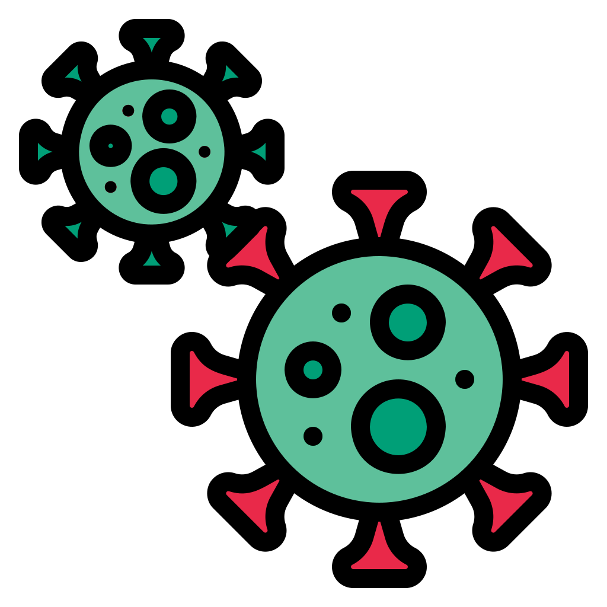
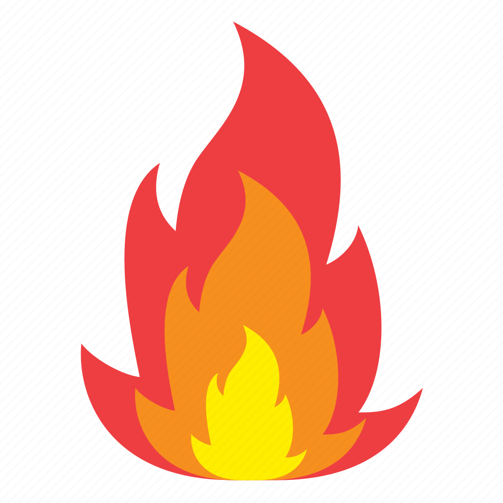
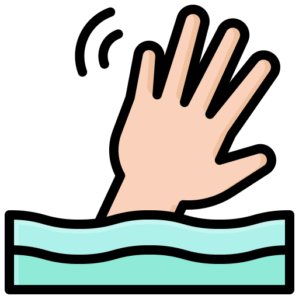
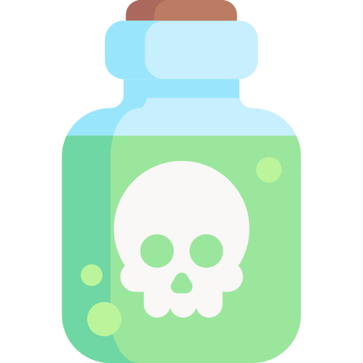
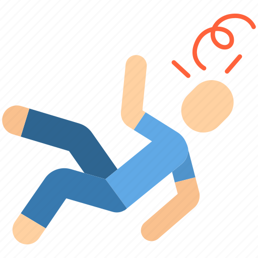

الانقاذ
مرر على الايقونات للمزيد
-

حوادث الطرق والاصابات
قم بتقديم الاسعافات الاولية الفورية للمصابين ونقلهم الى المستشقى اذا لزم الامر, وتوفير الدعم النفسي للضحايا واقاربهم
-

الامراض الوبائية
قم بتطبيق التدابير الوقائية مثل التباعد الاجتماعي وارتداء الأقنعة،وتوفير الفحوصات والعلاج اللازم للمصابين
-

الإصابات بالحروق
قم بتوفير الرعاية الطبية الفورية، وتقديم العلاج الضروري، والعمل على منع تفاقم الإصابات
-

حوادث الغرق
عند رؤية حالة غرق يرجى محاولة انقاذ الشخص وتقديم الاسعافات الاولية
-

التسممات الغذائية
قم بتقديم العلاج الطبي للمصابين، والتحقق من سلامة المواد الغذائية، واتباع الإجراءات الوقائية لتجنب حدوث التسمم
-

الإغماء
قم بتقديم الإسعافات الأولية ونقل المريض إلى المركز الطبي إذا لزم الأمر، وتقديم الرعاية اللازمة للمريض